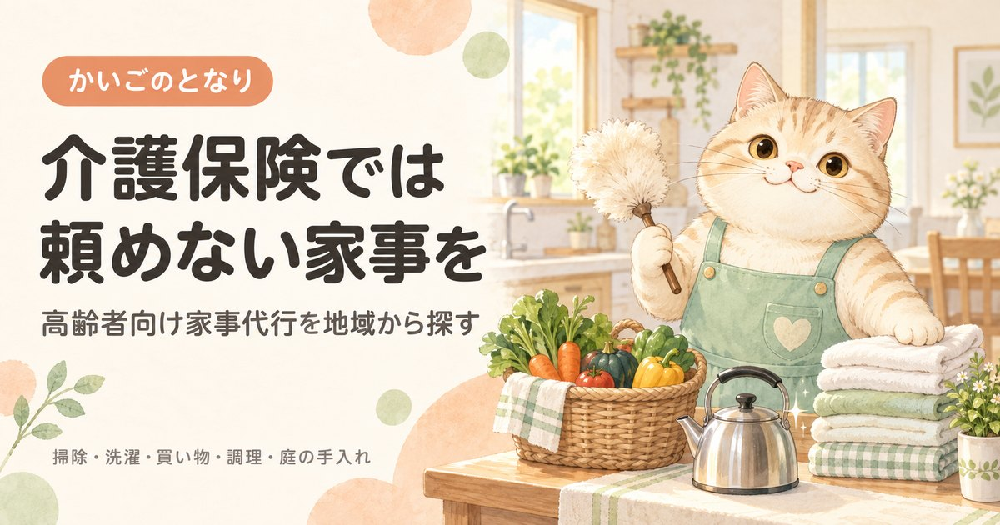

高齢者向け家事代行を地域から探す

「それは介護保険では頼めません」と言われた家事は、事業所の都合ではなく制度の線引きです。同じ作業でも家事代行なら頼めます。介護保険で埋まらない部分だけを保険外で補うという考え方で整理してください。
都道府県から探す
東京都準備中神奈川県準備中埼玉県準備中千葉県準備中大阪府準備中愛知県準備中兵庫県準備中福岡県準備中北海道準備中京都府準備中静岡県準備中広島県準備中
準備中のエリアは、掲載できる事業者情報がそろい次第の公開となります。
介護保険のヘルパーに頼めない家事
訪問介護の「生活援助」で頼めるのは、利用者本人の日常生活に必要な範囲だけです。国が示している基準では、次の3つは介護保険の対象外とされています。ここが家事代行の出番です。
| 対象外になる区分 | 具体例 |
|---|---|
| 本人以外のための家事 | 同居家族の食事づくり・洗濯、家族が使う部屋の掃除、来客の応接、自家用車の洗車 |
| やらなくても生活に支障が出ないこと | 草むしり、花木の水やり、ペットの世話 |
| 日常的な家事の範囲を超えること | 大掃除、窓のガラス磨き、床のワックスがけ、家具の移動・模様替え、家屋の修理やペンキ塗り、植木の剪定、正月・節句など特別な手間をかけた調理 |
※厚生労働省「訪問介護におけるサービス行為ごとの区分等について」（老計第10号）にもとづく整理です。ヘルパーに頼めること・頼めないことの全体像はヘルパーに頼めること・頼めないことをご覧ください。
「ヘルパーさんに断られた」のほとんどは、事業所の都合ではなく制度の線引きです。同じ作業を家事代行に頼めば問題なくできます。介護保険と家事代行は競合ではなく、役割が分かれていると考えてください。
訪問介護（生活援助）と家事代行の違い
| 訪問介護の生活援助 | 家事代行 | |
|---|---|---|
| 根拠 | 介護保険（公的制度） | 民間サービス（保険外） |
| 使える人 | 要介護認定を受けた本人のみ | 誰でも。世帯全体の家事を頼める |
| 費用 | 1〜3割の自己負担 | 全額自己負担 |
| 頼める内容 | 上の表のとおり制限がある | 制限は事業者の規約次第で、幅が広い |
| 始めるまで | 要介護認定 → ケアプラン作成 → 利用開始（1か月〜1か月半） | 申し込みと日程調整のみ |
| 1回の時間 | 20分以上45分未満などの区分で決まる | 2時間程度からの事業者が多い |
| 限度額 | 区分支給限度基準額を消費する | 限度額とは無関係 |
ここで見落とされがちなのが最後の行です。生活援助を増やすと、その分だけデイサービスや訪問看護に使える枠が減ります。保険でしかできないこと（身体介護や医療的なケア）に限度額を残し、誰がやっても同じ家事は保険外に逃がす——これが限度額を使い切っている方の定石です。
料金の考え方
家事代行の料金は地域と事業者で大きく違うため、当サイトでは一律の相場を示しません。かわりに、見積もりを比べるときに効いてくる項目を挙げます。総額はここで決まります。
- 時間制が基本で、最低時間がある「1回2時間から」という事業者が多く、1時間だけ頼みたい用事には割高になります。
- 定期契約のほうが1時間あたりは安い週1回などの定期と、必要なときだけのスポットでは単価が変わります。まずスポットで試し、合えば定期に切り替えるのが安全です。
- 交通費が別途かかる実費のところと一律のところがあります。自宅から遠い事業者ほど積み上がります。
- 割増の条件早朝・夜間・土日祝、担当者の指名。高齢のご本人に合わせて平日昼間に寄せられるなら、ここは抑えられます。
- 鍵の預かり本人が不在でも作業する場合は鍵の管理が必要です。預かり料の有無と管理方法を確認してください。
費用を抑える順番
いきなり民間に頼む前に、先に当たる先があります。上から順に確認するだけで、同じ作業がかなり安くなることがあります。
- シルバー人材センターほぼすべての市区町村にあり、掃除・洗濯・買い物・草取り・植木の剪定などを引き受けています。民間より料金を抑えやすい一方、受けられる作業の種類と繁忙期の空きは地域差が大きいので、早めの相談が要ります。
- 社会福祉協議会の住民参加型サービス「ふれあいサービス」などの名称で、地域の会員が家事を手伝う仕組みを持つ社協があります。有償ボランティアの形が中心で、会員登録が前提になります。
- 自治体の高齢者向け生活支援自治体独自に配食・ごみ出し・除雪・簡易な家事援助などを行っている場合があります。窓口は介護保険課ではなく高齢福祉の担当課のことが多く、地域包括支援センターで一括して聞けます。
- 民間の家事代行上記で埋まらない部分を頼みます。曜日・時間の自由度と作業の幅はここがいちばん広く、急ぎにも対応しやすいのが利点です。
頼むときの確認事項
- 1. 本人以外の家事も頼めるか同居のご家族の分をまとめて頼めるかどうかは、介護保険との最大の違いです。ここを使わないと家事代行にする意味が薄くなります。
- 2. 同じ人が来るか高齢のご本人にとっては、担当が毎回変わることが大きな負担になります。担当固定の可否と、固定の場合の指名料を確認してください。
- 3. 損害賠償保険に入っているか作業中の破損に備えた保険の加入は、事業者を選ぶ最低条件と考えてください。
- 4. 何をどこまでやるか、書面で残るか「掃除」の範囲は人によって違います。初回に作業内容を書き出して合意しておくと、後のすれ違いが減ります。
- 5. キャンセル規定体調の波があるご本人の場合、前日・当日キャンセルの扱いは実質的な費用差になります。
食事の用意そのものが負担になっているなら、調理を頼むより宅配弁当・配食サービスのほうが安く済むことがあります。手渡しの配達なら安否確認も兼ねられるので、見守りサービスと合わせて考えてください。